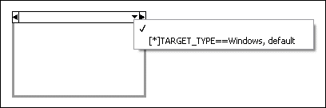

The Conditional Disable structure has an empty or invalid condition.
In this example, a subdiagram in the Conditional Disable structure does not include a condition. To correct this error, right-click the selector and select Edit Condition For This Subdiagram from the shortcut menu. In the Configure Condition dialog box, enter a condition for the subdiagram.